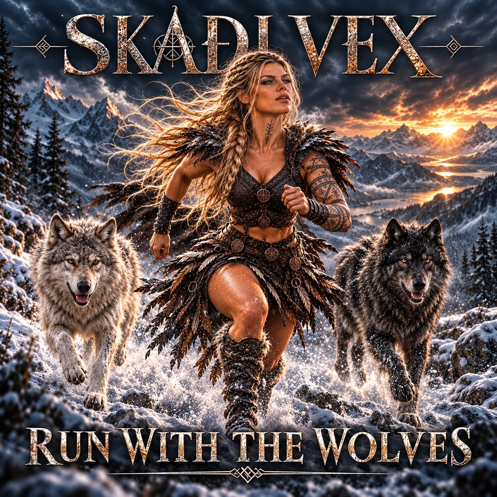

05 MAR 2027 · UPCOMING ALBUM
RUN WITH THE WOLVES
Seven songs. One pack. A new era.
See seven tracks
- The SKAÐI Army
- Gjallarhorn
- The North Answers
- Run With the Wolves
- Wolf Run
- Hail the Wolves
- Hear SKAÐI Roar